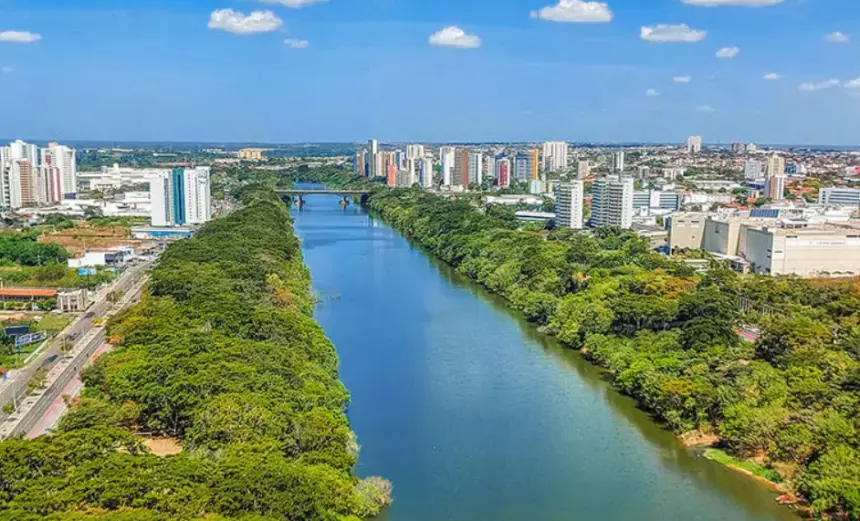

Piauí é um estado localizado na região Nordeste do Brasil, conhecido por sua beleza natural e rica cultura. A capital do estado é Teresina, uma cidade vibrante e cheia de história. Piauí é famoso por suas paisagens deslumbrantes, como o Parque Nacional de Sete Cidades, com suas formações rochosas únicas, e as praias do litoral, que atraem muitos visitantes. Além disso, o estado tem uma culinária deliciosa, com pratos típicos como a carne de sol, a paçoca de pilão e a galinha caipira.
